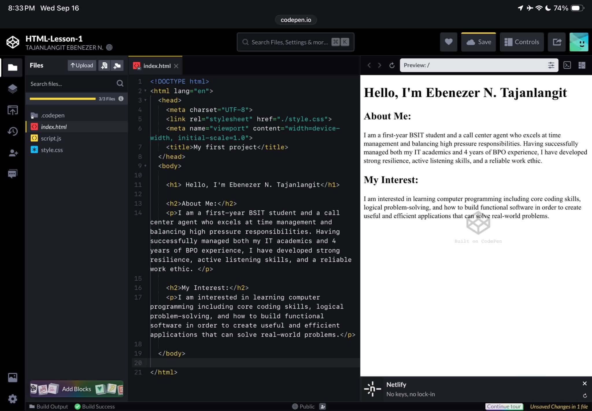
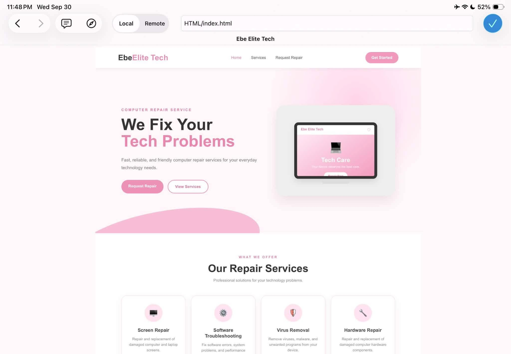

01 / WEB BASICS
HTML5
HTML is how I lay out the structure of a webpage, including headings, links, images, and forms.
BSIT · FIRST YEAR
I'm a first-year student who loves technology, creative design, and building useful things online. This portfolio shows my skills, my projects, and my progress as I keep learning and improving.
ABOUT ME
My name is Ebenezer Tajanlangit, and I'm a first-year BSIT student at Cordova Public College. I am eager to develop my skills in programming, web development, and problem-solving. As I begin my journey in the IT field, I look forward to gaining knowledge, exploring new opportunities, and growing into a skilled IT professional.
I consider myself a responsible, hardworking, and dedicated individual who believes that learning is a continuous process. Although I am still at the beginning of my journey, I am willing to face challenges, learn from my mistakes, and take every opportunity to grow both personally and academically
This portfolio serves as a collection of my skills, activities, projects, and achievements throughout my journey as an IT student. My goal is to continuously improve, gain valuable experience, and become a skilled IT professional in the future.
This year, my goal is to make more websites, strengthen my graphic design, and grow into a confident developer and designer.
WHAT I’M LEARNING
01 / WEB BASICS
HTML is how I lay out the structure of a webpage, including headings, links, images, and forms.
02 / STYLING
I add style with CSS and use Flexbox and grid so my layouts look organized on laptops and phones alike.
03 / FAST STYLING
Utility classes let me set colors, spacing, and responsive layouts in less time while keeping my code clear.
04 / VISUAL DESIGN
I like designing layouts, picking colors, and pairing fonts so that every page feels neat and easy to read.
MY PROJECTS
Here are some of my projects. Choose an image preview to look at each one.

01 / HTML · BEGINNER WEB DEVELOPMENT
A simple personal webpage created using HTML to introduce myself, share my background, and showcase my interests as a first-year BSIT student. This project helped me understand the basic structure and elements of web development.
View image preview →
02 / HTML | CSS | WEB DESIGN
A responsive website concept for a computer repair service business featuring different repair services, including screen repair, software troubleshooting, virus removal, and hardware repair. This project allowed me to explore website design, layout organization, and user-friendly interfaces.
View image preview →CONTACT
If you have a project idea, a design to show me, or a question about web development, I’d be glad to hear from you. Email me and I’ll reply soon.
You can email me at
tajanlangit.ebenezer@gmail.comCebu City, Philippines
Cordova Public College · BSIT
Always open to teamwork and new ideas.